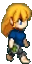
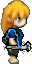
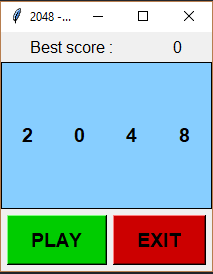
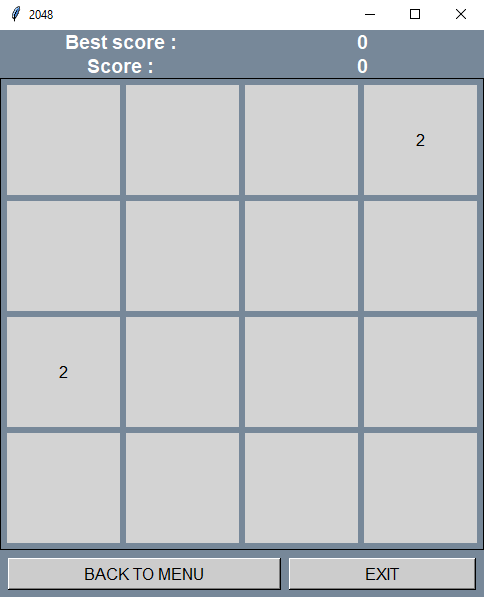
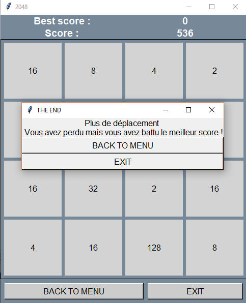

Pegguy est un platformer 2D crée à l'occasion d'un concours de gameDesign. Le thème etait "Label et la Bete". Nous avons donc décidé de nous orienter vers le label PEGI permettant de classer les jeux en fonction de leur violence, images etc. Le jeu est composé de plusieurs tranches de vie de Pegguy en fonction de son age que le joueur va découvrir. Le jeu est une caricature des labels PEGI toujours à la limite.
  Knowledge to Escape est un jeu crée lors de la Global Gam Jam 2018 dont le thème etait la transmission. Le joueurs incarne un petit personnage qui doit s'echapper d'un laboratoire.
Malheuresement le temps est son ennemi et il sera forcé de réapparaitre dans son HUB toutes les 30 secondes. Pour avancer dans l'histoire il doit récuperer des neurones a travers la carte pour acheter des
capacités tels que sauter, la possibilité de s'accroupir ou même allonger le temps de liberté en dehors du HUB. Le jeu est composé de deux niveaux ainsi qu'une ambiance sonore propre.
Undead est le projet de fin de Licence2. Il s'agit ici d'un jeu de reflexion. Le joueur doit resoudre des casses têtes en placant des fantomes, vampires et zombies sur un plateau.
Il s'agit d'une recréation du jeu de Simon Tatham ,
dont le rapport peut être télécharger ici
2048 est un petit projet que j'ai tutoré avec des Terminales de mon ancien lycée lorsque j'etais en 2ème année de licence. Il s'agit du célèbre jeu mobile en version ordinateur codé entièrement sous Python3
Mon role dans ce projet etait de créer une version clean qui servait de correction aux élèves pour les aider a créer de meilleurs jeux.
Le jeu est disponible sous format ZIP via ce lien
  